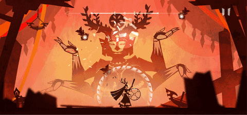
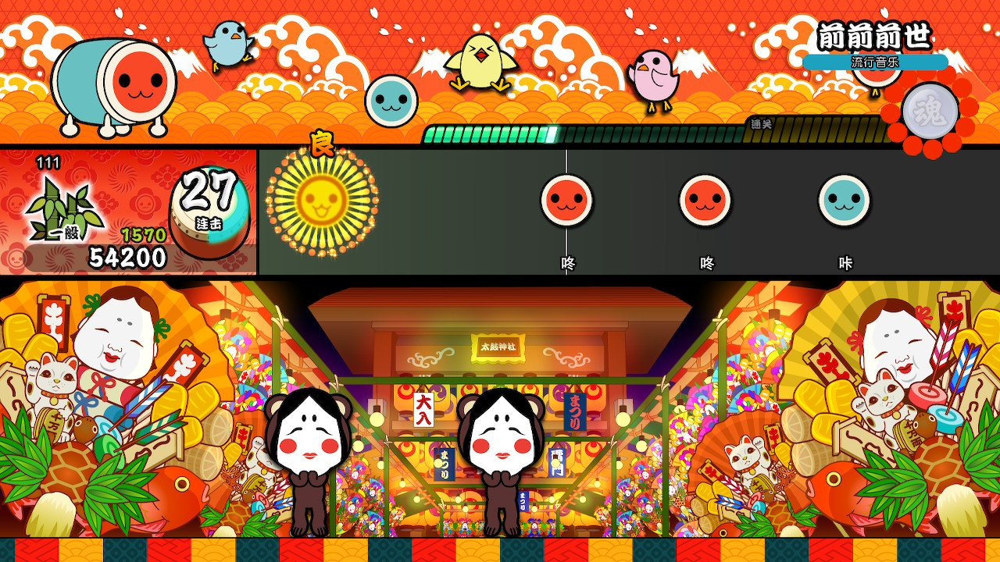
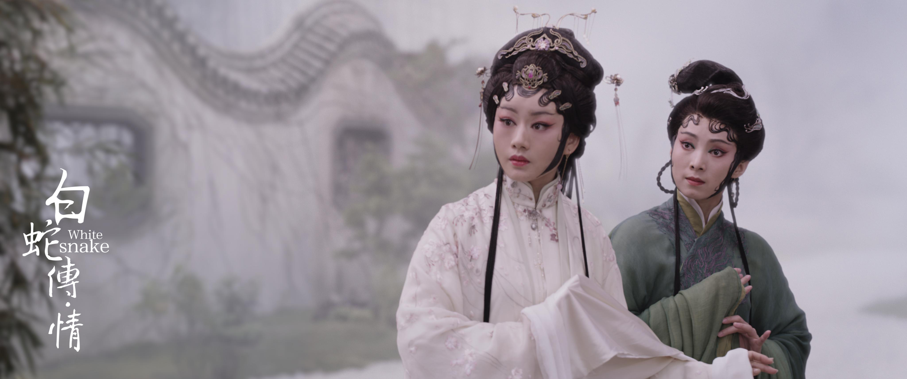
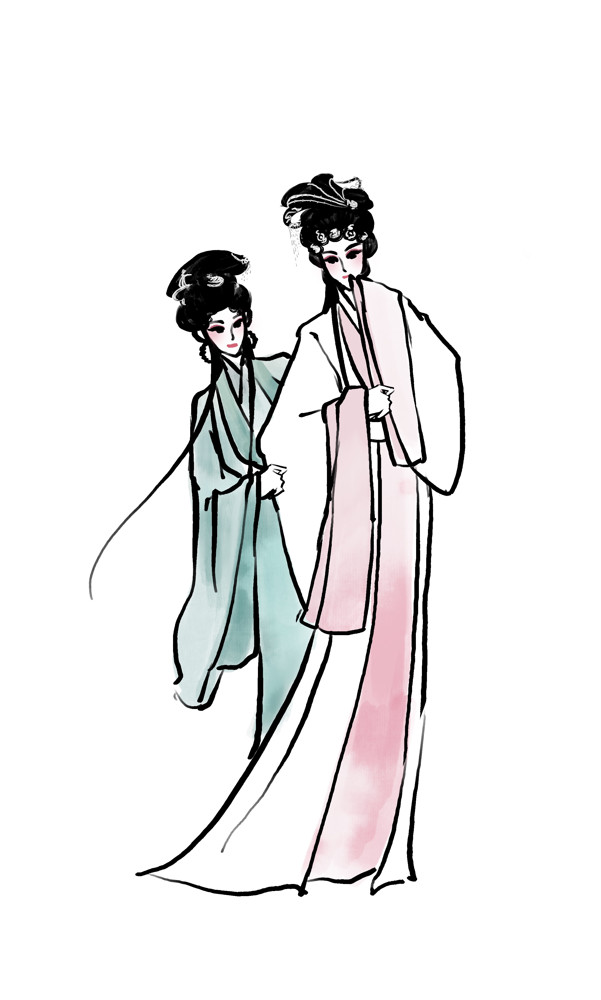
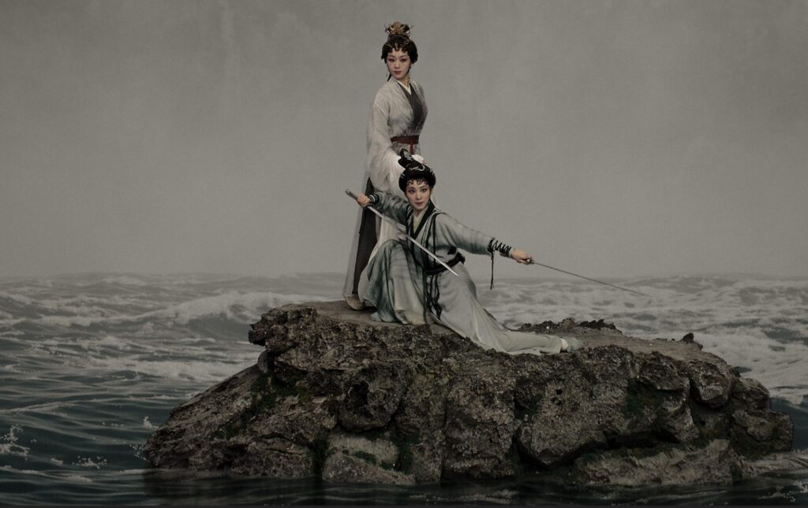
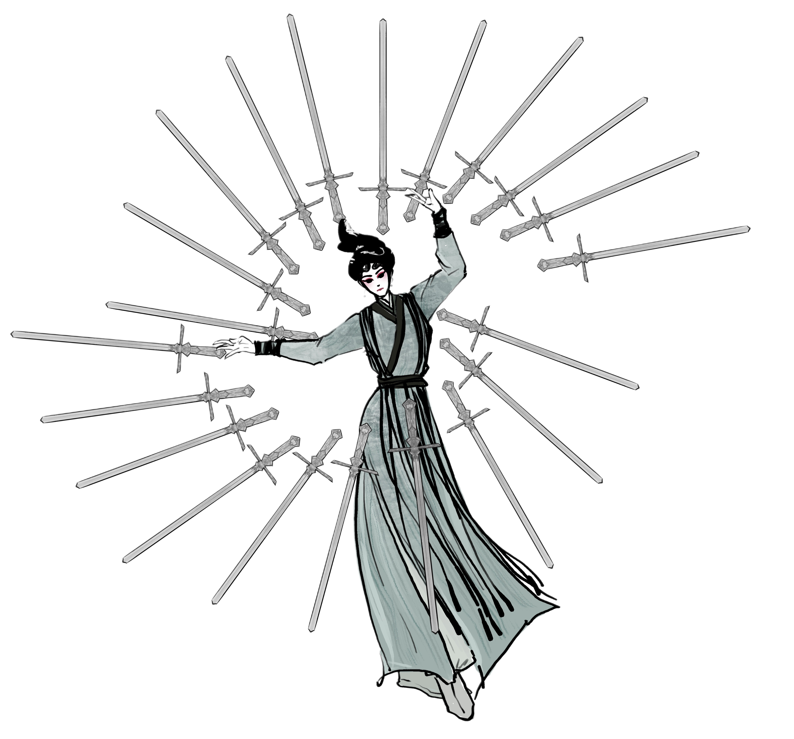
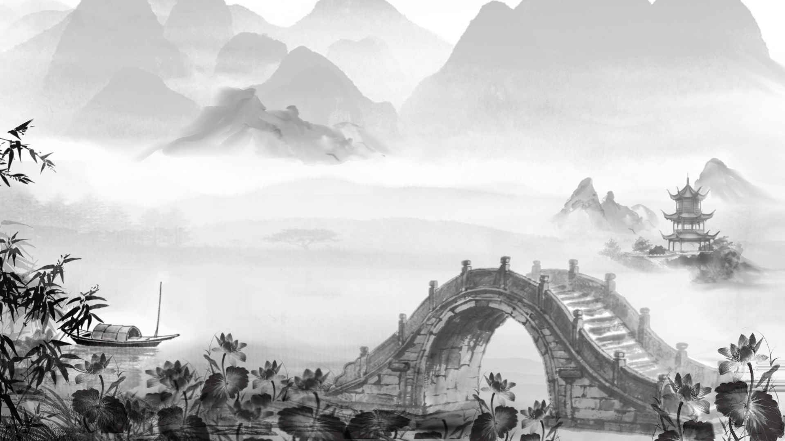

Problem问题
Young audiences rarely encounter traditional opera in their daily media environment. 年轻观众很少在日常媒介环境中接触传统戏曲。
Using interactive storytelling to reconnect traditional culture with a new generation. 用互动叙事让传统文化重新连接年轻一代。
A Cantonese Opera Rhythm Game 一款粤剧题材叙事节奏游戏
White Snake is a narrative rhythm game inspired by Cantonese Opera. The project explores how rhythm, performance, and interactive storytelling can make traditional performing arts feel immediate for younger players. 《白蛇传》是一款受粤剧启发的叙事节奏游戏。项目探索节奏、表演与互动叙事如何让传统表演艺术对年轻玩家变得更直接、更可进入。
01
The game follows Bai Suzhen and Xu Xian from their first encounter at West Lake to the confrontation at Jinshan Temple. Instead of treating opera as surface decoration, the project translates timing, gesture, musical tension, and stage emotion into playable systems. 游戏从白素贞与许仙在西湖初遇开始，推进到金山寺的冲突。项目并不把戏曲当作表层装饰，而是将时机、身段、音乐张力与舞台情绪转译为可玩的系统。
The design priority is to let players feel story through interaction: listening, anticipating, responding, and gradually understanding the emotional rhythm of the legend. 设计重点是让玩家通过互动感受故事：聆听、预判、回应，并逐渐理解这个传说中的情感节奏。
02
How can traditional culture remain meaningful in a digital generation? 传统文化如何在数字一代中继续产生意义？
Problem问题
Young audiences rarely encounter traditional opera in their daily media environment. 年轻观众很少在日常媒介环境中接触传统戏曲。
Question想法
Could gameplay become a new entry point for cultural storytelling? 玩法能否成为文化叙事的新入口？
Approach做法
Use rhythm mechanics, narrative progression, and Cantonese Opera aesthetics as one connected experience. 将节奏机制、叙事推进与粤剧审美整合为一个连续的互动体验。
03

Reference game · Nishan Shaman参考作品 · 尼山萨满
Nishan Shaman was one of my references for a rhythm game based on a traditional story. It also inspired Fahai’s shield in Act II.构思以传统故事为题材的节奏游戏时，我参考了《尼山萨满》。第二幕法海的护盾设计也受到它的启发。

Reference game · Taiko no Tatsujin参考作品 · 太鼓达人
Taiko no Tatsujin was another reference when I developed the rhythm gameplay.构思节奏玩法时，我也参考了《太鼓达人》。
I referred to Cantonese Opera performances for the story, music, costumes, makeup, and character styling.故事与音乐来自粤剧题材，人物服装、妆容与造型也参考粤剧原本的舞台装造。
04 / 05
Act I follows the music toward a meeting. Act II uses rhythm to fight Fahai.第一幕跟随音乐推进两人相遇，第二幕用节奏操作对抗法海。
ACT I第一幕
Bai Suzhen and Xu Xian begin at opposite ends of the bridge. This act follows their approach and meeting.白素贞和许仙从桥的两头出发。这一幕围绕两人逐渐靠近、在桥中间相遇展开。
Players listen to the music and time their inputs to the notes. Notes travel from the two characters toward the central judgement area. The focus is on musical timing as the scene progresses.玩家听音乐，跟随音符节奏输入。音符从两个角色的方向向中间判定区移动。这一幕主要考察跟随音乐的节奏操作，同时推进桥上的相遇过程。
The characters meet in the middle of the bridge, followed by the act’s closing story scene. Players follow a musical sequence with a visible destination in the story.两人在桥中间相遇，随后接入这一幕的结尾剧情。玩家在跟随音乐时，也能看到这段故事正在往哪里推进。
ACT II第二幕
I wanted Act II to feel like a boss battle with a clear goal: defeat Fahai and rescue Xu Xian. Bai Suzhen and Xiaoqing fight together at Jinshan Temple. The conflict comes from the opposition to Bai Suzhen and Xu Xian’s love because she is a spirit and he is human.我希望第二幕有打 Boss 的感觉，目标很明确：打败法海，救出许仙。白素贞与小青一起在金山寺对抗法海，冲突来自白素贞与许仙的相恋受到“人妖殊途”的阻碍。
Players time their inputs to the music as Bai Suzhen and Xiaoqing fight Fahai. His shield was inspired by Nishan Shaman; the health bar above tracks his remaining health. Successful hits first reduce the shield, then his health once the shield is gone. Misses do not reduce the player’s health.玩家跟随音乐输入，参与白素贞与小青对抗法海的战斗。法海周围的护盾参考了《尼山萨满》，上方血条显示他的剩余生命值。命中先削减护盾，护盾打掉后才开始削减生命值。Miss 不扣玩家血量。
Act I follows the meeting on the bridge. Act II turns successful rhythm inputs into damage, first to Fahai’s shield and then to his health. Character movement follows the timeline; rhythm judgements determine damage rather than movement.第一幕围绕桥上相遇展开。第二幕把节奏命中变成攻击，先打掉法海的护盾，再削减生命值。角色移动按时间线进行，节奏判定影响伤害，不直接推动角色移动。
06
I used scenes from the Cantonese Opera film White Snake (白蛇传·情) as references for the characters’ costumes, hair, makeup, and poses. The comparisons below show those references alongside my character artwork.我参考粤剧电影《白蛇传·情》中的具体画面，设计人物的服装、发型、妆容和姿态。下面将参考画面与我的角色画稿放在一起对照。
The reference and drawing share the light pink and green costume colors, elaborate hairstyles, and long sleeves. The drawing uses simpler outlines and fewer costume details.参考画面与画稿中，可以对照看到浅粉与青绿的服装配色、盘发和长袖。画稿使用更简洁的轮廓，减少了服装细节。


The combat reference shows a different costume and a sword pose. The game artwork gives Xiaoqing a separate battle appearance, with green robes and swords arranged around her.战斗参考中，服装和持剑姿态与日常场景不同。游戏里的小青也有单独的战斗造型，身穿青绿色衣服，周围排列剑阵。


I also referred to the film’s scenery when drawing the backgrounds. This bridge background is used for the meeting in Act I.绘制背景时，我也参考了电影中的配景。这张桥景用于第一幕两人相遇的场景。

07
The project moved from rhythm prototype to Unity implementation, then toward clearer visual layering and playable storytelling. 项目从节奏原型推进到 Unity 实现，再逐步优化视觉层级与可玩的叙事结构。
I built the rhythm interaction in Unity, then used it for the bridge encounter and the boss battle. Each act connects the rhythm input to its own story scene.我在 Unity 中实现节奏操作，再分别用于桥上相遇和 Boss 战，让每幕的操作对应它的剧情。
08
Position-based judgement became inaccurate when notes had to follow animated characters.音符需要跟随移动中的角色，单靠屏幕位置判断命中会不准确。
Solution修改I redesigned the logic around expected arrival time instead of only screen position.我改用音符预计到达判定区的时间进行判定，不再只看屏幕位置。
Impact结果Music, animation, and narrative timing stayed synchronized.这样可以让音符判定与音乐、动画和剧情时间线保持同步。
The early chart did not line up well with the music when played. Cantonese Opera has many vocal turns and ornaments, and following too many of them made the notes dense and hard to read. A friend and I repeatedly checked and adjusted the timing. I also removed some notes and kept mainly the stronger accents, making the chart less crowded while bringing the inputs closer to the music.早期谱面实际按起来和音乐对不上。粤剧转音很多，一开始我放了太多音符，画面很密，玩家不容易看清。我和朋友反复试听、试玩，校准音符时间；后来又删掉一部分音符，主要保留重音，才逐渐把谱面整理好。
The second act needed stronger conflict than a traditional rhythm stage.第二幕需要表现与法海的对抗。
Solution修改Fahai's shield and health were connected to rhythm judgement results.我把节奏命中与法海的护盾、生命值关联：先打掉护盾，再削减生命值。
Impact结果The story climax became an interactive confrontation.玩家通过节奏操作参与这场对抗。
Notes were sometimes hidden behind background effects, subtitles, characters, or UI elements.音符有时会被背景特效、字幕、角色或界面遮住。
Solution修改A dedicated camera renders the note layer above other visual elements.我用单独的摄像机渲染音符层，让音符显示在其他画面元素上方。
Impact结果The rhythm interface remained clear during visually complex scenes.画面元素较多时，玩家仍然能看清音符。
09
One thing that worked particularly well was connecting gameplay directly to narrative emotion. In West Lake Encounter, the converging note system allowed the rhythm mechanic itself to express the growing relationship between Bai Suzhen and Xu Xian. 这个项目中最有效的部分，是把玩法直接连接到叙事情绪。西湖初遇里，双向汇聚的音符系统让节奏机制本身表达了白素贞与许仙之间逐渐形成的关系。
During development, I realized the biggest challenge was not simply adapting Cantonese Opera into a game. The harder problem was preserving the emotional meaning of the original work while still creating an experience that felt readable and playable for new audiences. 开发过程中我意识到，最大的挑战并不是简单地把粤剧改编成游戏。更难的是在保留原作情感意义的同时，让新的玩家依然能够读懂、进入并参与这个体验。
If I continue this project, I would focus on expanding the story, improving rhythm feedback, and creating stronger transitions between gameplay and performance. I want the next version to feel less like separated stages and more like a continuous performance shaped by player input. 如果继续推进这个项目，我会把重点放在扩展故事、优化节奏反馈，以及加强玩法与表演之间的转场上。我希望下一版不只是几个分开的关卡，而更像一场被玩家输入共同塑造的连续表演。
10
Add additional story chapters, including Stealing the Immortal Herb, Broken Bridge Reunion, and Leifeng Pagoda.扩展盗仙草、断桥重逢、雷峰塔等后续故事章节。
Develop an opera archive system with character notes, music context, and performance knowledge.开发戏曲档案系统，包含角色笔记、音乐语境与表演知识。
Create a costume collection system that lets players learn through visual discovery.建立服装收集系统，让玩家通过视觉探索理解戏曲元素。
Explore educational applications for cultural learning and classroom use.探索面向文化学习与课堂应用的教育版本。
Optimize the project for PC and mobile release.针对 PC 与移动端发布进行优化。
Traditional stories do not disappear. They simply wait for new ways to be told. 传统故事不会消失。它们只是等待新的讲述方式。